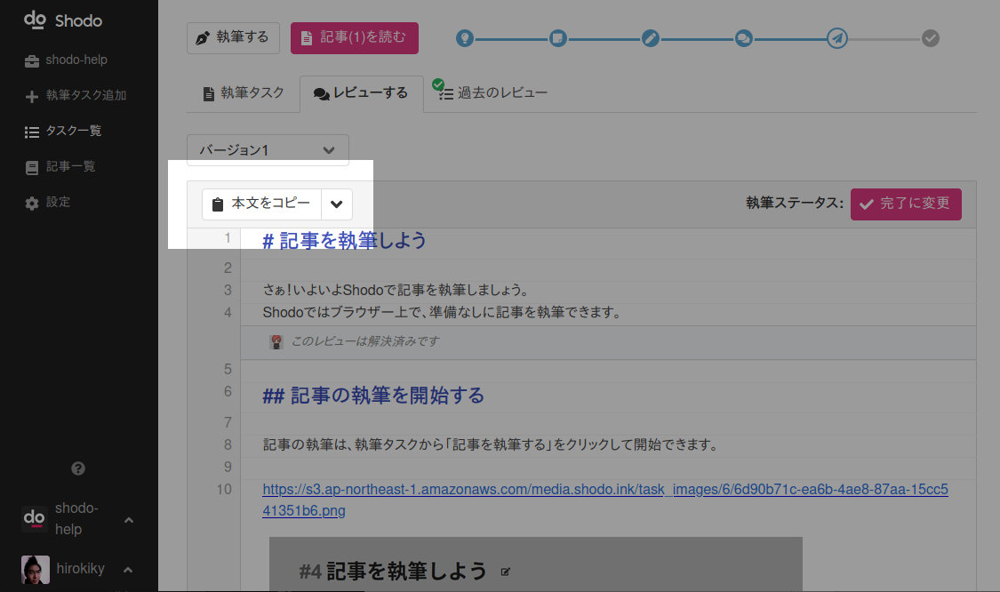

記事を公開して執筆タスクを完了にしよう¶
ついに記事が完成しましたね！ あとはShodoの世界を飛び出して、ブログやオウンドメディアなどの各配信プラットフォームで公開すれば完了です。
記事の本文をコピーする¶
記事の本文をコピーするには、執筆タスクのレビュー画面から「本文をコピーする」をクリックします。

あとは各配信プラットフォームに記事をペーストしてください。 公開のためのコーディングやデザインの調整などはブログサービスなどで行ってください。
ShodoはMarkdown形式で記事を執筆、公開することをオススメしています。 はてなブログやWordPressで利用できますので、ぜひShodoで書いた記事をそのままブログなどにペーストして記事としてください。
Shodoで記事を執筆、修正する範囲は？¶
もしブログサービスなどに記事を貼り付けたあとに文章の変更などが少し必要になった場合などは、都度そのサービス上で修正すれば良いでしょう。 大きな変更でなければ逐次Shodoにもどって記事を修正する必要はありません。数パラグラフの文を書く必要がある場合は、やはり校正やレビューがしやすいShodoでやり直したほうが良いでしょう。
コーディングやデザインを作ったあとに文言の大きな修正が入ると、コーディング作業などが無駄になることが多いです。 なるべくShodo上の原稿の段階で内容を詰めておきましょう。ブログ記事やWebページになったときは、最終的なデザインや見た目、配置のレビューに注力すると手戻りが少ないでしょう。
執筆タスクを完了にする¶
記事が公開できたら執筆タスクを完了にしましょう。 執筆タスクを完了にするには、レビュー画面から「完了に変更」をクリックすると便利です。

執筆タスクの詳細画面から、ステータスを「完了」に変更してもOKです。
おつかれさまでした！ Shodoでの記事執筆の流れは以上です。
他にもAIやによる校正や校正ルールの設定、タスクのチェックリスト機能やSlack連携など便利な機能は盛り沢山です！ ぜひShodoを活用して執筆やコラボレーションを加速し、創造性を発揮しましょう。